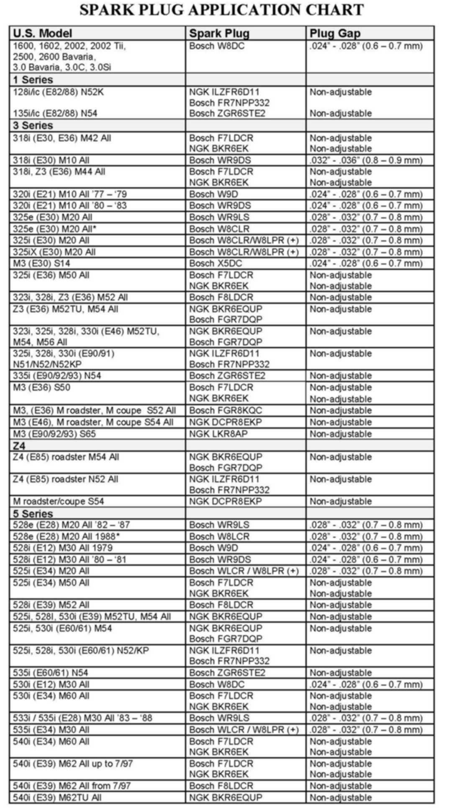

Ignition System - Iridium Spark Plug Applications
B12 01 05Engine Electrical Systems
April 2008
Technical Service
This Service Information bulletin supersedes SI B12 01 05 dated March 2008.
[NEW] designates changes to this revision
SUBJECT
High Performance Iridium Spark Plug/Spark Plug Application Chart
MODEL
E90, E91, E92, E93, E60, E61 with N51, N52, N52K engine
SITUATION
High Performance Iridium Spark Plugs, also referred to as High Power Iridium Spark Plugs, were introduced starting with the 2006 model year and later E90 and E60 vehicles with the N52 engine.
High Performance Iridium Spark Plugs incorporate an iridium center electrode (0.6 mm thick), one ground electrode, and a redesigned insulator.
The new spark plug technology allows for increased service life, improved cold start performance/combustion characteristics, and consistent operation throughout the entire service life.
The service life of the new High Performance Iridium Spark Plug is 100,000 miles.
PROCEDURE
The High Performance Iridium Spark Plug tightening torque of 31Nm +/- 2Nm (23 +/- 1.5ft.lb.) remains the same as the specification used on other standard BMW engines.

[NEW] The updated Spark Plug Application Chart includes the spark plug manufacturer, plug designation, tightening to
all BMW engines.
Notes:
^ On N52/N52KP engines, only High Performance Iridium Spark Plugs are to be used when the replacement is required. A mix of spark plugs from different manufacturers, i.e., Bosch/NGK, should never be installed in one engine.
^ Spark plugs must always be torqued to the proper specifications as outlined on the chart.
PARTS INFORMATION
WARRANTY INFORMATION
Information only

Disclaimer